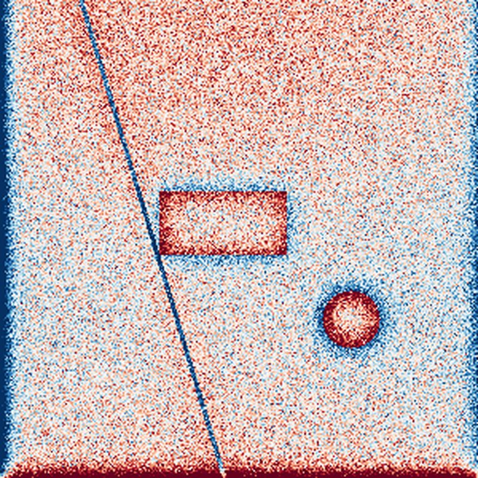
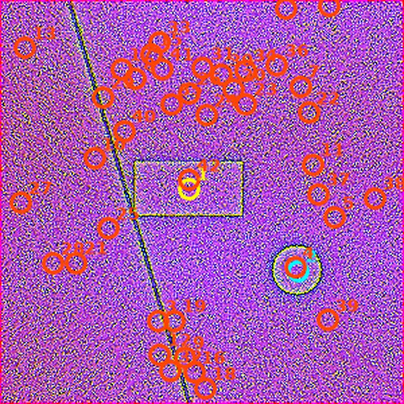
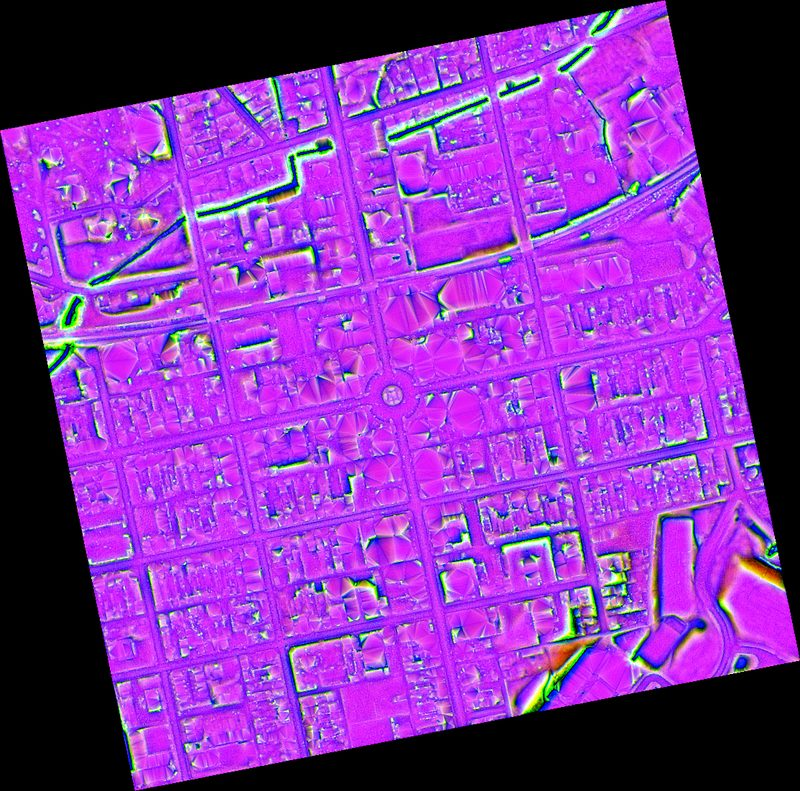
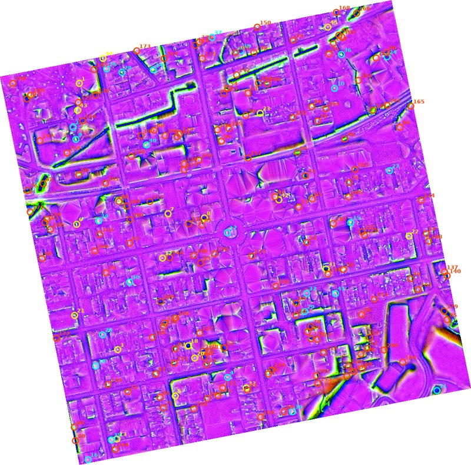

Liedarman
1. Motivation
Airborne LIDAR has become a standard remote-sensing tool in archaeology because of one property optical imagery lacks: a single laser pulse can return multiple times as it passes through vegetation canopy before hitting bare ground, letting a classified point cloud be filtered down to a "bare-earth" elevation model with the trees and undergrowth digitally stripped away. This is the same property behind well-known LIDAR-driven discoveries of settlement networks hidden under dense forest canopy in Mesoamerica and Southeast Asia — the structures were never truly hidden underground, only hidden from optical sensors by what was growing on top of them.
Raw elevation alone, however, rarely shows anything useful: a building foundation reduced to a few centimeters of relief is invisible against natural micro-topography and sensor noise at normal color scales. The techniques below — long established in archaeological remote-sensing literature — exaggerate exactly that kind of small local relief, turning elevation data most people would dismiss as "just a flat field" into a map of what used to stand there.
2. Methods
2.1 Data acquisition
Input can be a user-supplied DEM GeoTIFF, a ground-classified LAS/LAZ point cloud (gridded via linear interpolation over the classified ground returns), or — for US locations — a place name or coordinate pair, geocoded via OpenStreetMap/Nominatim and fetched directly from USGS's 3D Elevation Program (3DEP) web services, with no manual download step and no API key required.
2.2 Terrain visualization derivatives
Four derived products are computed from the DEM:
- Multi-directional hillshade — simulated illumination averaged over eight sun azimuths, reducing the single-light-direction bias of a conventional hillshade.
- Slope — steepness at each cell, in degrees.
- Local Relief Model (LRM) — the DEM minus a Gaussian-smoothed copy of itself, isolating small local bumps and depressions from the broader regional terrain trend.
- Sky-view openness (positive and negative) — the mean horizon angle across several compass directions at each cell; positive openness highlights convex features (mounds, walls), negative highlights concave ones (pits, ditches, sunken paths), independent of any single simulated light source.
These four are fused into an RGB composite (openness channels plus hillshade) in which man-made geometry tends to separate visually from the more textured, irregular signature of natural terrain.
2.3 Candidate detection
The LRM is thresholded against local background noise (mean ± k standard deviations) into "raised" and "depressed" binary masks, which are then processed with OpenCV contour extraction. Each contour is scored for rectangularity (contour area over minimum-bounding-rectangle area) and circularity (4π·area / perimeter²) — shapes clearing either threshold are classified accordingly and ranked by score; the rest are kept as lower-confidence "irregular" candidates.
3. Validation against synthetic ground truth
Before trusting the pipeline against real data, we generated a synthetic DEM — rolling terrain plus Gaussian noise — with three known structures embedded at known locations: a 40 × 20 m rectangular raised foundation, an 18 m-diameter circular raised mound, and a diagonal sunken linear ditch. The detection pipeline was run blind to these ground-truth positions.


| Rank | Shape | Detected area | True area | Detected size | True size |
|---|---|---|---|---|---|
| 1 | rectangular | 751 m² | 800 m² | 20.0 × 39.5 m | 20 × 40 m |
| 2 | circular | 238 m² | ~254 m² | 17.7 m dia. | 18 m dia. |
Both embedded structures were recovered as the top two ranked candidates, with size and location matching ground truth closely. Remaining candidates in the ranked list are false positives driven by the synthetic terrain's random noise floor — expected, and consistently ranked below the true structures by confidence score.
4. Case study: Gettysburg, PA
To test the pipeline against real, auto-fetched LIDAR data, we ran it against an 800 × 800 m area centered on downtown Gettysburg, Pennsylvania, at 1 m resolution, fetched automatically from USGS 3DEP by place name alone.


5. Present/past comparison
Once a candidate location is identified, the next question for a hobbyist is: where does that map onto the world as it actually looks today? Liedarman builds a "blink comparator" — the same technique astronomers have long used to spot a moving object by flashing two photos of the same sky back and forth — that flashes between a present-day satellite image and the LIDAR past-structure composite, aligned pixel-for-pixel, in real time. In the web application this is a live map overlay; the CLI additionally emits a standalone, self-contained HTML file for offline viewing.
6. Interactive web application
A Leaflet-based map interface runs over the same pipeline described above:
- Search by place name or coordinates — runs the full fetch → derive → detect pipeline server-side
- Candidate markers colored and ranked by shape/confidence, with details on click
- Real-time flicker toggle (or space bar) between the live satellite basemap and the past-structure overlay
- Click anywhere to name and save your own flagged location, persisted locally across sessions
7. Get access
Liedarman is a hosted tool — each search runs real LIDAR fetch, terrain-derivative, and detection compute server-side, which costs real time and resources per query rather than being a one-time download. Access details and pricing are being finalized.
8. Limitations & future work
- False positives are expected. Natural terrain noise, vegetation edges, and shadow artifacts can score high enough to be flagged. Auto-detection is a starting point for narrowing a search area, not a verdict — always cross-check the composite/overlay images directly.
- Large flat features need parameter tuning. The morphological-closing kernel (§2.3) must be sized relative to the smallest feature you expect; a mismatch fragments detection results.
- DEM quality varies by location. Urban "bare-earth" products aren't always guaranteed to exclude standing structures; rural agricultural or forested sites are typically cleaner test cases.
- Not yet validated against a genuinely vanished structure. Every validation so far used either synthetic ground truth or currently-standing real buildings.
- Roadmap: weighting/ML-based confidence scoring beyond pure geometric heuristics, non-US data source support, and packaging for wider distribution.
No legal or jurisdictional restrictions are built into the tool itself — where it is or isn't appropriate to search with the results is entirely the responsibility of the person using it, the same as any other detection or survey equipment.